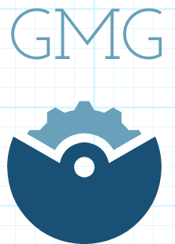

<div class="example-container" [class.example-is-mobile]="mobileQuery.matches" >
  <mat-toolbar color="primary" class="example-toolbar">
    <button mat-icon-button (click)="snav.toggle()">
      <mat-icon>menu</mat-icon></button>
    <div>
      <h3 >
        <b>Bienvenido {{user}}</b>
      </h3>
    </div>
  </mat-toolbar>

  <mat-sidenav-container [style.marginTop.px]="mobileQuery.matches ? 56 : 0">
    <mat-sidenav #snav opened mode="side"  style="background:#3f51b5 "  [mode]="mobileQuery.matches ? 'over' : 'side'"
                 [fixedInViewport]="mobileQuery.matches" fixedTopGap="56">
      <mat-nav-list style="width:166px">
        <div style="padding: 5px">
          
        </div>
        <a mat-list-item *ngFor="let item of arrayItems ;let i = index" [routerLink]="[item.url]" (click)="selected(item)"
           [style.background-color]="item.enable===false ? 'white' :''"
           [style.color]="item.enable===false ? 'black' :'white'">
          <i [style.color]="item.enable===false ? 'black' :''"  class="material-icons orange600">{{item.icon}}</i>
          <b>{{item.name}}</b>
        </a>
      </mat-nav-list>
    </mat-sidenav>
    <mat-sidenav-content>
      <router-outlet></router-outlet>
    </mat-sidenav-content>
  </mat-sidenav-container>
</div>
